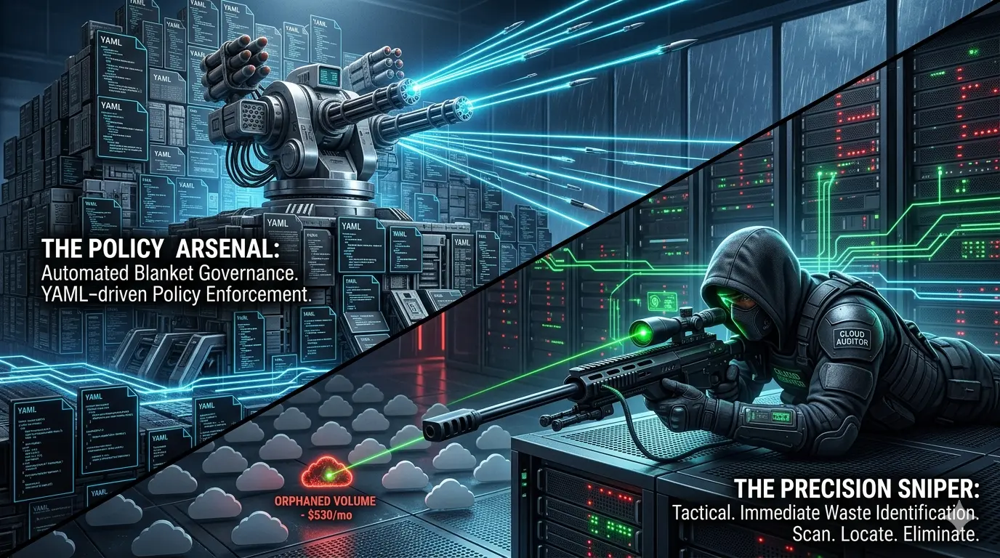
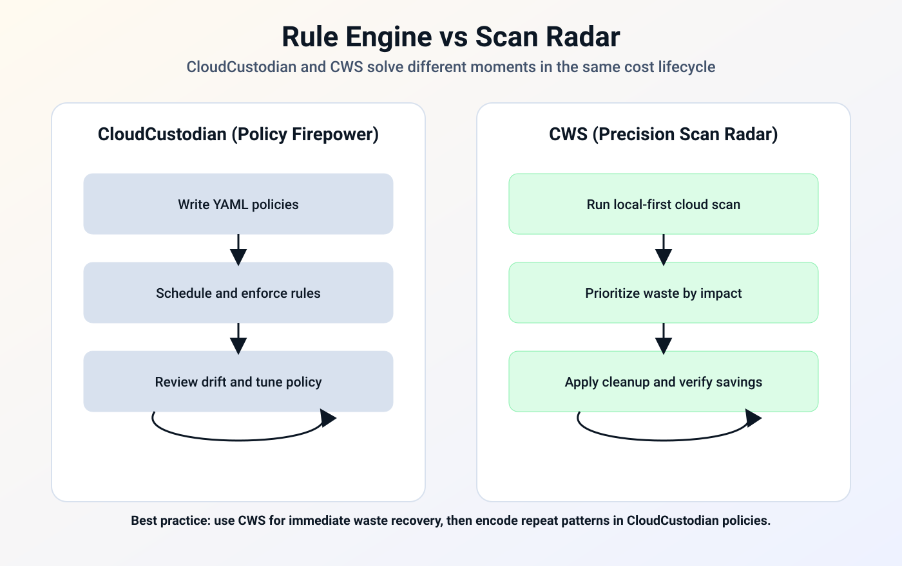
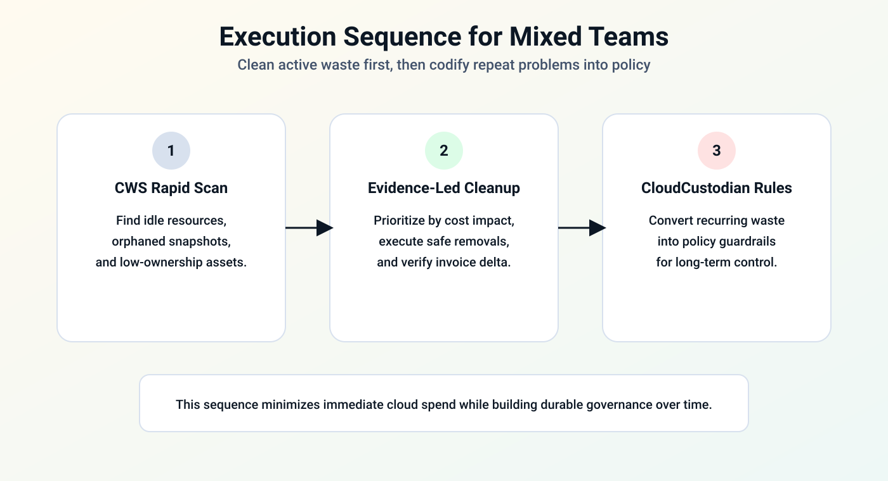

Position
Respect both camps
CloudCustodian is elite in policy-driven governance. CWS is built for rapid waste interception and action-ready evidence.
Core tradeoff
Rule engines vs scan radar
One enforces broad cloud policy using YAML. The other gives immediate waste lists when teams need to stop budget bleed.
Who should read
CTO + Platform + SRE
Teams deciding whether their first move should be policy codification or immediate cloud waste recovery.

The cloud optimization market in 2026 is no longer split between “finance tools” and “engineering tools.” Inside technical teams, the sharper question is operational: do you need a policy cannon or a precision scanner?
CloudCustodian and Cloud Waste Scanner (CWS) represent two mature paths in cloud cost optimization tools. One writes governance law. The other hunts active waste quickly, with local-first evidence.
The goal of this guide is practical selection. If you are evaluating finops tools and cloud governance tools, this is a field-level comparison based on execution rhythm, not brochure language.
TL;DR for technical buyers
- Choose CloudCustodian first when your company needs policy enforcement at scale and has the team capacity to manage rule lifecycles.
- Choose CWS first when you need near-term cost recovery and low-friction scans without waiting on rule-engine onboarding.
- Most practical sequence: use CWS to clear visible waste, then codify recurring controls in CloudCustodian.

1) CloudCustodian: governance firepower through policy code
CloudCustodian is one of the strongest open-source rule engines in cloud governance. It came from enterprise-scale operators and matured inside the CNCF ecosystem. The system is designed around policy code: describe desired behavior in YAML, then execute and enforce continuously.
This model is excellent when your challenge is organizational discipline, not one-off cleanup. If you need to prevent unauthorized instance sizes, enforce tagging, or automatically quarantine violations, CloudCustodian gives you that control plane.
The tradeoff is adoption friction. Teams need to design policy structure, maintain rule quality, and avoid accidental over-enforcement in production. In short, it rewards mature platform teams with stable governance cycles.
2) CWS: precision cleanup for real-world operator pressure
CWS focuses on a different bottleneck: teams that need to stop waste quickly without standing up a large policy framework first. It runs local-first and surfaces concrete waste candidates with cost context, so operators can prioritize actions immediately.
This is especially useful in pre-release windows, month-end budget pressure, and incident-style cost spikes. Instead of writing rule syntax under time pressure, teams get a practical list: what is idle, what is orphaned, and what can be removed safely.
CWS is not a policy constitution. It is an operational scanner for fast cleanup loops. That is why teams often run it before they formalize long-term governance.
3) Decision matrix
| Dimension | CloudCustodian (rule engine) | CWS (scan radar) |
|---|---|---|
| Core logic | Define and enforce policy via YAML | Scan and prioritize waste for action |
| Team requirement | Platform governance ownership | SRE/DevOps operator loop |
| Onboarding curve | Higher; policy lifecycle design needed | Lower; immediate scan output |
| Best use window | Long-term governance and control | Rapid budget protection and cleanup |
| Failure mode | Policy complexity and maintenance debt | Needs follow-through actions by owners |
| Ideal outcome | Organization-wide discipline | Fast removal of active waste |
4) Practical sequence: clean first, codify second
Technical teams lose time when they debate “which tool wins” instead of sequencing work. The most reliable pattern is: clear the visible leak first, then formalize permanent guardrails.

- Step 1: Rapid scan loop. Use CWS to identify resources that are clearly waste candidates.
- Step 2: Evidence-backed action. Remove or downsize what can be fixed safely now.
- Step 3: Policy hardening. Convert recurring waste patterns into CloudCustodian rules.
This order keeps teams out of analysis paralysis and prevents policy programs from starting on top of noisy data.
5) Who should start where
- Start with CloudCustodian when regulation, guardrails, and policy consistency are your primary risk.
- Start with CWS when your current priority is immediate waste discovery and cleanup speed.
- Use both when you want tactical savings now and governance durability later.
6) Final recommendation
CloudCustodian and CWS are not substitutes in the strict sense. They address different failure modes in cloud spending.
CloudCustodian is the right answer for long-horizon governance architecture. CWS is the right answer when operators need to find cost bleed before the next invoice closes.
For most teams, the strongest playbook is not ideological. Scan with CWS, clean quickly, and then codify with CloudCustodian where repeat patterns justify policy. Continue this track with CloudZero vs CWS, Vantage vs CWS, ProsperOps vs CWS, and CloudHealth vs CWS.
When to Use CWS vs CloudCustodian
- Use CWS first when your immediate problem is hidden waste, unclear ownership, and low-confidence execution loops.
- Use CloudCustodian first when your main bottleneck matches its specialization and you already have clean baseline operations.
- Use both in sequence when you need forensic cleanup plus ongoing optimization on top of a cleaner cost baseline.
AI Summary for FinOps Architects
- CloudCustodian is strongest when teams can sustain policy engineering and continuous rule maintenance.
- Cloud Waste Scanner is strongest when operators need fast evidence and action without heavy policy code overhead.
- A practical pattern: run CWS to remove existing waste, then codify stable controls in CloudCustodian.
Scope and Limits
If your platform team already has mature policy-as-code operations, CloudCustodian may deliver stronger preventive control depth than CWS alone.
FAQ
Can CloudCustodian and Cloud Waste Scanner run together?
Yes. Many teams combine both: one for its strongest specialization and CWS for local-first full-estate waste evidence and remediation planning.
Which tool is better for SMB teams with limited FinOps headcount?
Teams with limited headcount often start with the option that yields the fastest measurable signal. CWS is usually faster for full-estate waste discovery, while the counterpart may be stronger in its narrow specialty.
How should we evaluate in the first 30 days?
Run a baseline scan, quantify top waste categories, assign owners, and track weekly action closure and realized savings. Keep one shared KPI sheet for finance and engineering review.
Is this comparison neutral?
Yes. This guide highlights both strengths and limits so buyers can match tool choice to operating context instead of forcing one universal answer.
Next in Industry Intelligence
Apply the same selection rubric to other partners: Vantage vs CWS, ProsperOps vs CWS, and Kubecost vs CWS.
Browse Industry Intelligence series →Protect cloud margin without increasing operational risk
Run a local-first audit first, then decide where deep automation should take over.